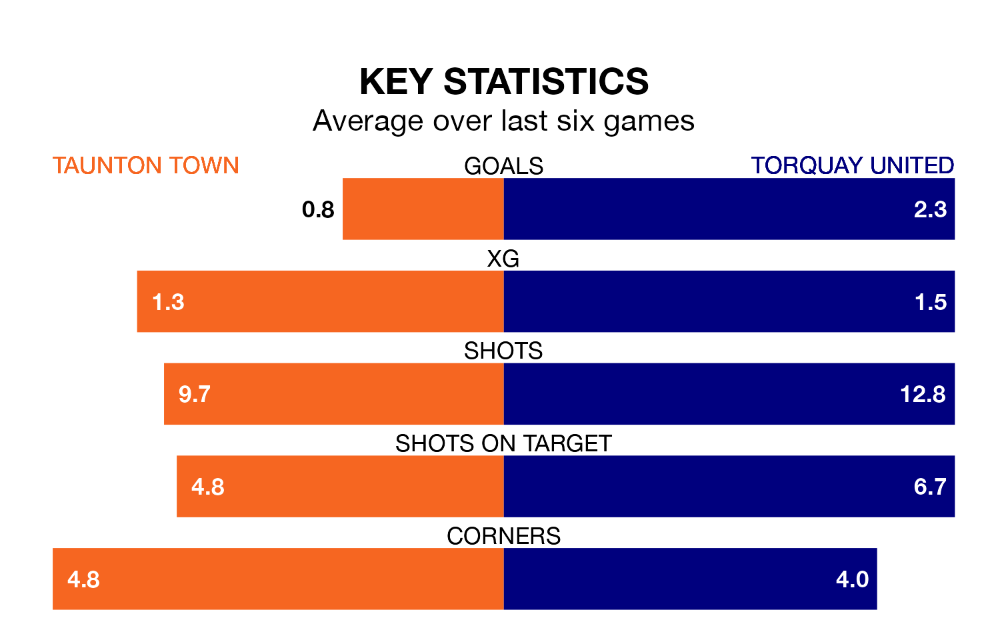

Taunton Town host Torquay United in Tuesday's late match at the Cygnet Health Care Stadium looking to bounce back from defeat last time out in National League North and South.
Taunton, who sit zero in the league after 19 games, fell to a 3-0 away defeat to Havant and Waterlooville on Saturday.
They face a Torquay side who picked up a win in their last match, a 3-2 victory against Hemel Hempstead Town, and who sit fourth in the table.
With 41 goals in 22 games so far this season, Torquay are scoring more than average in the league with 1.9 goals per game. But they are conceding more than average too, letting in 33 goals at a rate of 1.5 per game.
Taunton, meanwhile, are below average scorers, with 1.3 goals per game, compared to a league average of 1.4. They have also conceded 1.3 goals per game.
Town are in disappointing form in National League North and South, with one win and two draws from their last six games.
With five wins and one loss over that period, United's form is much better – they have taken 15 points from 18, compared to the home team's five.
